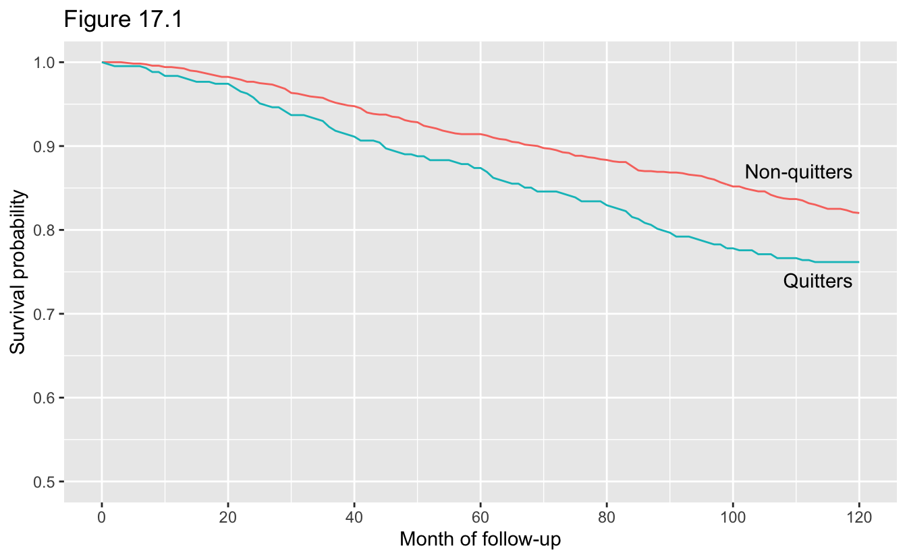
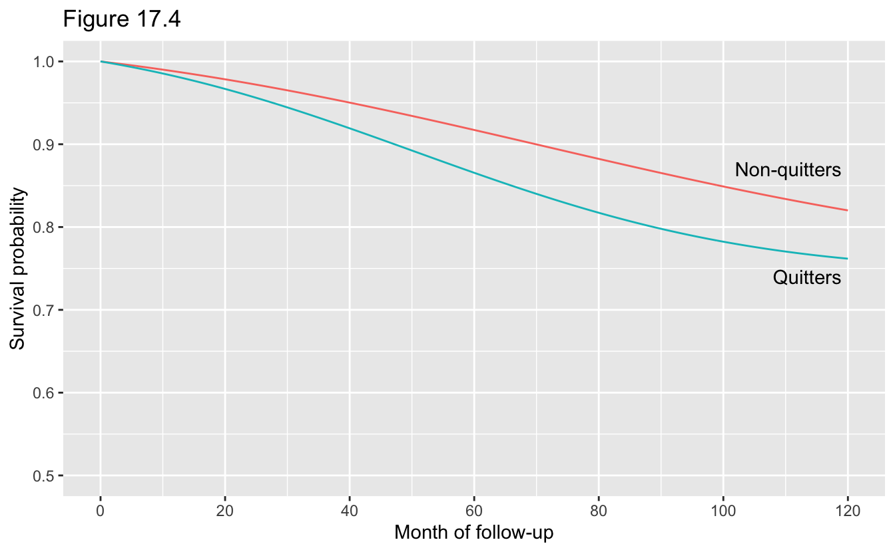
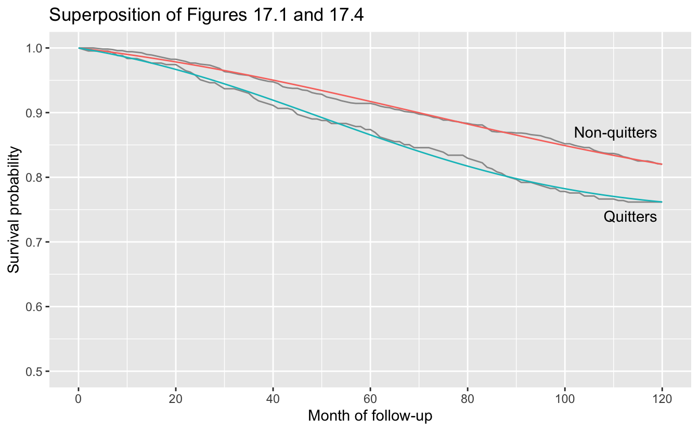
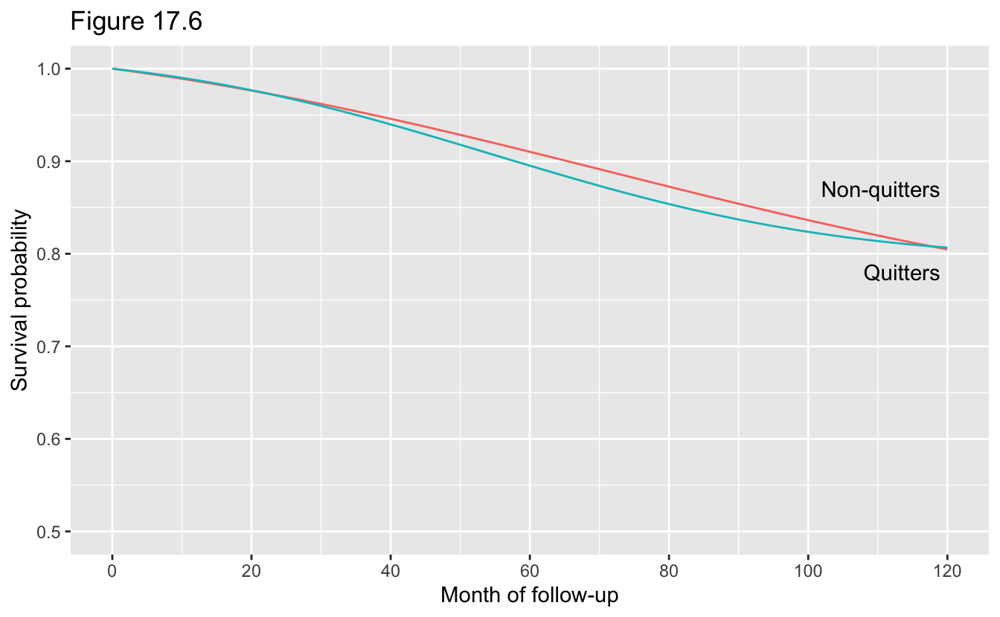
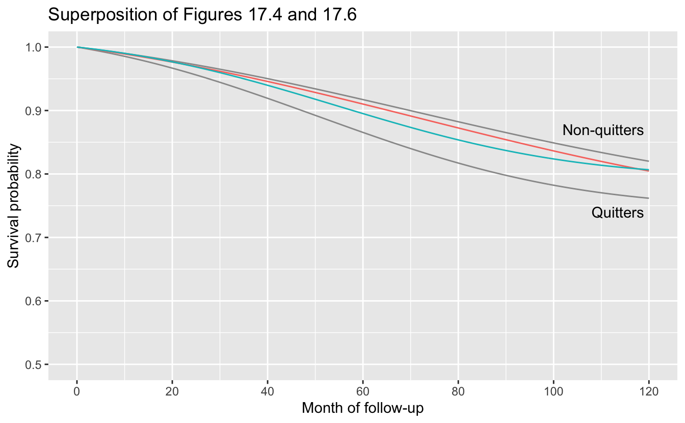
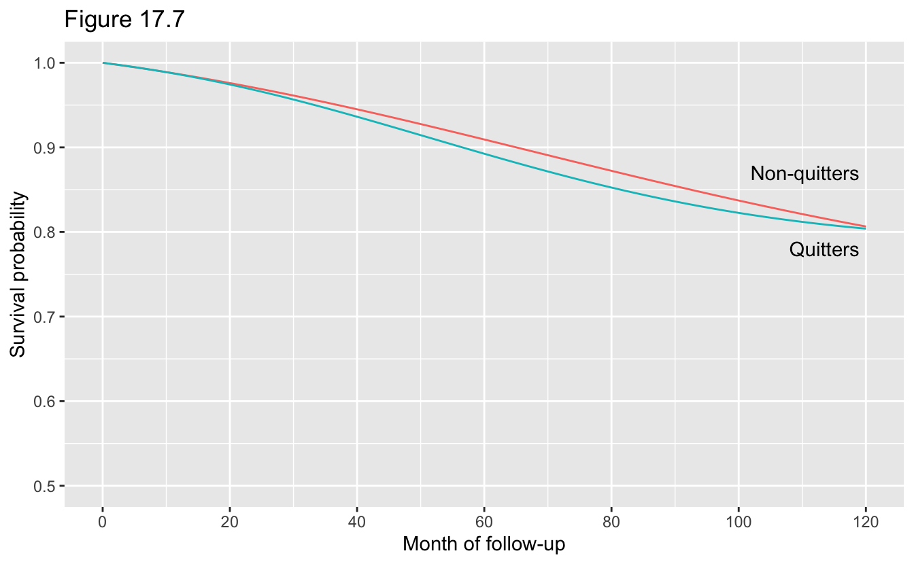
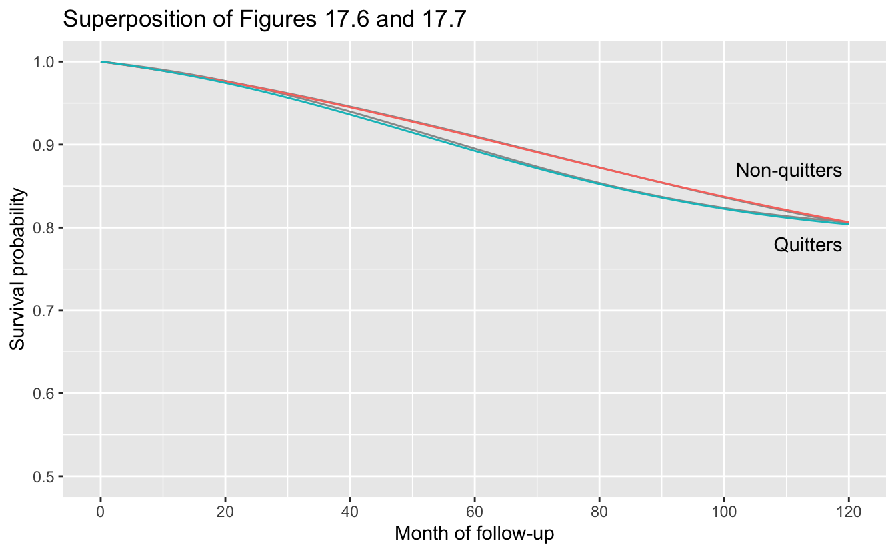
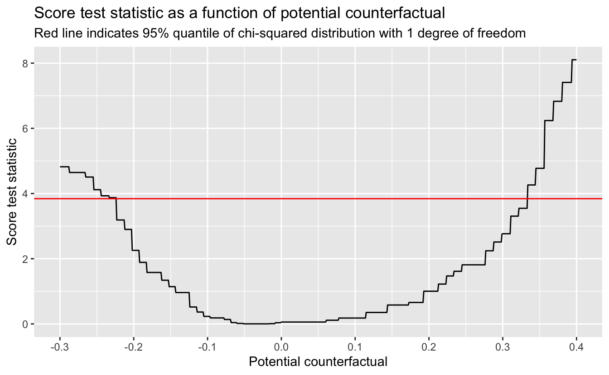

17 Causal survival analysis
# Packages
library(tidyverse)
# Parameters
# NHEFS data
file_nhefs <- here::here("data/nhefs.rds")
# Round and format vector
round_format <- function(x, nsmall = 2, ...) {
format(round(x, digits = nsmall), nsmall = nsmall, ...)
}
# Print tibble
kable <- function(x, cols = where(is.double), nsmall = 2, align = "r", ...) {
x %>%
mutate(across({{cols}}, round_format, nsmall = nsmall)) %>%
knitr::kable(align = align, ...) %>%
kableExtra::kable_styling(full_width = FALSE, position = "left")
}
# Print min, mean, and max of vector
kable_summary <- function(x, nsmall = 2, ...) {
tibble(min = min(x), mean = mean(x), max = max(x)) %>%
kable(nsmall = nsmall, ...)
}
#===============================================================================
# NHEFS data with qsmk as a double
nhefs <-
read_rds(file_nhefs) %>%
mutate(qsmk = as.double(qsmk) - 1)17.1 Hazards and risks
In the following, we will use these variables:
dadth: Day of deathdeath: Death by 1992- 0: No
- 1: Yes
modth: Month of deathyrdth: Year of death
Number of people in dataset.
nrow(nhefs)#> [1] 1629Range of ages.
range(nhefs$age)#> [1] 25 74The number of people who died by the end of 1992.
v <-
nhefs %>%
count(death)
kable(v)| death | n |
|---|---|
| 0 | 1311 |
| 1 | 318 |
Of the 1629 individuals in the dataset, 318 died before the end of 1992, and the remaining 1311 survived.
The variables death, yrdth, modth, and dadth.
nhefs %>%
count(death, !is.na(yrdth), !is.na(modth), !is.na(dadth))#> # A tibble: 3 × 5
#> death `!is.na(yrdth)` `!is.na(modth)` `!is.na(dadth)` n
#> <fct> <lgl> <lgl> <lgl> <int>
#> 1 0 FALSE FALSE FALSE 1307
#> 2 0 FALSE TRUE TRUE 4
#> 3 1 TRUE TRUE TRUE 318Note that four individuals have months and days of death but no year. They are classified by the death variable as having not died. For the following, we will assume that the death variable is correct.
The follow-up period began on January 1, 1983 and lasted through December 31, 1992. For those who died, we will add the variable time_death for the month of the follow-up in which they died, ranging from 1 for January 1983 to 120 for December 1992.
nhefs <-
nhefs %>%
mutate(
time_death = if_else(death == "1", 12 * (yrdth - 83) + modth, NA_real_)
)Range of values for time_death.
range(nhefs$time_death, na.rm = TRUE)#> [1] 1 120Number of individuals who died by whether or not they quit smoking (qsmk).
v <-
nhefs %>%
filter(!is.na(time_death)) %>%
count(qsmk)
kable(cols = NULL, v)| qsmk | n |
|---|---|
| 0 | 216 |
| 1 | 102 |
Of the 318 individuals who died, 216 did not quit smoking and 102 did quit smoking.
For each treatment group (qsmk) and each follow-up month, calculate the cumulative deaths (deaths_cum), the number who survived (survived), and the proportion who survived (survival).
time_max <- max(nhefs$time_death, na.rm = TRUE)
survival_1 <-
expand_grid(qsmk = 0:1, time = 0:time_max) %>%
left_join(
nhefs %>%
filter(death == "1") %>%
count(qsmk, time = time_death, name = "deaths"),
by = c("qsmk", "time")
) %>%
replace_na(list(deaths = 0)) %>%
group_by(qsmk) %>%
mutate(
deaths_cum = cumsum(deaths),
survived = sum(nhefs$qsmk == first(qsmk)) - deaths_cum,
survival = survived / sum(nhefs$qsmk == first(qsmk))
) %>%
ungroup()
survival_1#> # A tibble: 242 × 6
#> qsmk time deaths deaths_cum survived survival
#> <dbl> <dbl> <int> <int> <int> <dbl>
#> 1 0 0 0 0 1201 1
#> 2 0 1 0 0 1201 1
#> 3 0 2 0 0 1201 1
#> 4 0 3 0 0 1201 1
#> 5 0 4 1 1 1200 0.999
#> 6 0 5 1 2 1199 0.998
#> 7 0 6 0 2 1199 0.998
#> 8 0 7 1 3 1198 0.998
#> 9 0 8 2 5 1196 0.996
#> 10 0 9 0 5 1196 0.996
#> # … with 232 more rows
#> # ℹ Use `print(n = ...)` to see more rowsFigure 17.1.
survival_plot_details <- function(y_quitters = 0.74) {
list(
annotate(
"text",
x = 119,
y = c(0.87, y_quitters),
hjust = 1,
label = c("Non-quitters", "Quitters")
),
coord_cartesian(ylim = c(0.5, 1)),
scale_x_continuous(breaks = scales::breaks_width(20)),
theme(legend.position = "none"),
labs(
x = "Month of follow-up",
y = "Survival probability"
)
)
}
survival_1 %>%
ggplot(aes(time, survival, color = as.factor(qsmk))) +
geom_line() +
survival_plot_details() +
labs(title = "Figure 17.1")
Log-rank test to compare survival curves.
test <-
nhefs %>%
transmute(
qsmk,
time = replace_na(time_death, replace = time_max),
event = as.double(death) - 1
) %>%
survival::survdiff(
survival::Surv(time = time, event = event) ~ qsmk,
data = .
)
broom::glance(test) %>%
select(p_value = p.value) %>%
kable(nsmall = 3)| p_value |
|---|
| 0.005 |
Survival at 120 months.
v <-
survival_1 %>%
filter(time == 120) %>%
select(qsmk, survival)
v %>%
kable(cols = survival, nsmall = 3)| qsmk | survival |
|---|---|
| 0 | 0.820 |
| 1 | 0.762 |
Survival at 120 months was 82.0% among non-quitters and 76.2% among quitters. The risk at 120 months was 18.0% among non-quitters and 23.8% among quitters.
Hazard at 120 months.
v <-
survival_1 %>%
mutate(
survived_prev = lag(survived),
hazard = deaths / survived_prev
) %>%
filter(time == 120) %>%
select(qsmk, time, deaths, survived_prev, hazard)
v %>%
kable(cols = hazard, nsmall = 4)| qsmk | time | deaths | survived_prev | hazard |
|---|---|---|---|---|
| 0 | 120 | 1 | 986 | 0.0010 |
| 1 | 120 | 0 | 326 | 0.0000 |
The hazard at 120 months was 0.10% among non-quitters and 0% among quitters.
17.2 From hazards to risks
Time-event tibble for person in person-time format.
time_event <- function(death, time_death) {
stopifnot(death %in% c("0", "1"))
if (death == "0") {
tibble(time = seq_len(time_max) - 1, event = 0)
} else if (death == "1") {
tibble(
time = seq_len(time_death) - 1,
event = rep(0:1, c(time_death - 1, 1))
)
}
}NHEFS dataset in person-time format.
nhefs_pt <-
nhefs %>%
select(seqn, qsmk, death, time_death) %>%
rowwise() %>%
mutate(time_event = list(time_event(death, time_death))) %>%
unnest(time_event)Number of rows in nhefs_pt.
nrow(nhefs_pt)#> [1] 176764Fit logistic regression for hazards.
fit <-
glm(
event ~ poly(time, 2) + qsmk * poly(time, 2),
family = binomial(),
data = nhefs_pt
)
broom::tidy(fit)#> # A tibble: 6 × 5
#> term estimate std.error statistic p.value
#> <chr> <dbl> <dbl> <dbl> <dbl>
#> 1 (Intercept) -6.44 0.0698 -92.2 0
#> 2 poly(time, 2)1 71.0 30.8 2.30 0.0212
#> 3 poly(time, 2)2 -56.5 30.1 -1.88 0.0604
#> 4 qsmk 0.306 0.125 2.45 0.0145
#> 5 poly(time, 2)1:qsmk -99.0 57.3 -1.73 0.0843
#> 6 poly(time, 2)2:qsmk -72.6 56.1 -1.29 0.196Calculate survival curves.
survival <- function(fit) {
expand_grid(qsmk = 0:1, time = 0:time_max) %>%
group_by(qsmk) %>%
mutate(
survival =
cumprod(
1 - predict(fit, newdata = tibble(qsmk, time), type = "response")
) %>%
lag(default = 1)
) %>%
ungroup()
}Figure 17.4.
survival_2 <- survival(fit)
survival_2 %>%
ggplot(aes(time, survival, color = as.factor(qsmk))) +
geom_line() +
survival_plot_details() +
labs(title = "Figure 17.4")
Superposition of Figures 17.1 and 17.4.
ggplot(mapping = aes(time, survival)) +
geom_line(aes(group = qsmk), data = survival_1, color = "grey60") +
geom_line(aes(color = as.factor(qsmk)), data = survival_2) +
survival_plot_details() +
labs(title = "Superposition of Figures 17.1 and 17.4")
17.4 IP weighting of marginal structural models
Stabilized IP weights for treatment.
ip_numerator <-
case_when(
nhefs$qsmk == 0 ~ 1 - mean(nhefs$qsmk),
nhefs$qsmk == 1 ~ mean(nhefs$qsmk),
TRUE ~ NA_real_
)
fit_denominator <-
glm(
qsmk ~ sex + poly(age, 2) + race + education + poly(wt71, 2) +
poly(smokeintensity, 2) + poly(smokeyrs, 2) + active + exercise,
family = binomial(),
data = nhefs
)
ip_denominator <-
case_when(
nhefs$qsmk == 0 ~ 1 - predict(fit_denominator, type = "response"),
nhefs$qsmk == 1 ~ predict(fit_denominator, type = "response"),
TRUE ~ NA_real_
)
ip_sw_a <- ip_numerator / ip_denominator
kable_summary(ip_sw_a)| min | mean | max |
|---|---|---|
| 0.33 | 1.00 | 4.21 |
NHEFS dataset with weights in person-time format.
nhefs_pt <-
nhefs %>%
transmute(seqn, qsmk, weight = ip_sw_a, death, time_death) %>%
rowwise() %>%
mutate(time_event = list(time_event(death, time_death))) %>%
unnest(time_event)Fit logistic regression for hazards.
fit <-
glm(
event ~ poly(time, 2) + qsmk * poly(time, 2),
family = binomial(),
data = nhefs_pt,
weights = weight
)
broom::tidy(fit)#> # A tibble: 6 × 5
#> term estimate std.error statistic p.value
#> <chr> <dbl> <dbl> <dbl> <dbl>
#> 1 (Intercept) -6.34 0.0669 -94.8 0
#> 2 poly(time, 2)1 73.4 29.5 2.49 0.0128
#> 3 poly(time, 2)2 -53.2 28.8 -1.85 0.0649
#> 4 qsmk -0.0351 0.135 -0.261 0.794
#> 5 poly(time, 2)1:qsmk -82.8 62.0 -1.34 0.181
#> 6 poly(time, 2)2:qsmk -94.7 60.9 -1.56 0.120Figure 17.6.
survival_3 <- survival(fit)
survival_3 %>%
ggplot(aes(time, survival, color = as.factor(qsmk))) +
geom_line() +
survival_plot_details(y_quitters = 0.78) +
labs(title = "Figure 17.6")
Superposition of Figures 17.4 and 17.6.
ggplot(mapping = aes(time, survival)) +
geom_line(aes(group = qsmk), data = survival_2, color = "grey60") +
geom_line(aes(color = as.factor(qsmk)), data = survival_3) +
survival_plot_details() +
labs(title = "Superposition of Figures 17.4 and 17.6")
Survival at 120 months.
v <-
survival_3 %>%
filter(time == 120) %>%
select(qsmk, survival)
v %>%
kable(cols = survival, nsmall = 3)| qsmk | survival |
|---|---|
| 0 | 0.805 |
| 1 | 0.807 |
Survival at 120 months was 80.5% among non-quitters and 80.7% among quitters for a difference of 0.2%.
Calculate survival difference at 120 months and the largest absolute value of the differences for all months. If boot = TRUE (the default), use bootstrap sample of data. If boot = FALSE, use full dataset.
survival_diff <- function(boot = TRUE) {
data <-
nhefs %>%
transmute(seqn, qsmk, weight = ip_sw_a, death, time_death) %>%
{
if (isTRUE(boot)) {
slice_sample(., prop = 1, replace = TRUE)
} else {
.
}
} %>%
rowwise() %>%
mutate(time_event = list(time_event(death, time_death))) %>%
unnest(time_event)
fit <-
glm(
event ~ poly(time, 2) + qsmk * poly(time, 2),
family = binomial(),
data = data,
weights = weight
)
survival(fit) %>%
group_by(time) %>%
summarize(diff = survival[qsmk == 1] - survival[qsmk == 0]) %>%
summarize(
last = last(diff),
max = max(abs(diff))
)
}Perform bootstrap resampling.
set.seed(231)
n_boot <- 500
boot_out <-
seq_len(n_boot) %>%
map_dfr(~ survival_diff())Survival difference at 120 months with 95% confidence interval calculated using bootstrap percentile method.
v <-
tibble(
estimate = survival_diff(boot = FALSE)$last,
conf_low = quantile(boot_out$last, probs = 0.025),
conf_high = quantile(boot_out$last, probs = 0.975)
)
kable(v, nsmall = 3)| estimate | conf_low | conf_high |
|---|---|---|
| 0.002 | -0.046 | 0.046 |
The survival difference at 120 months was 0.2% with a 95% confidence interval from -4.6% to 4.6% based on 500 bootstrap samples.
The largest absolute value of the differences for all months with 95% confidence interval calculated using bootstrap percentile method. Note that this a different measure than the one used in the book.
v <-
tibble(
estimate = survival_diff(boot = FALSE)$max,
conf_low = quantile(boot_out$max, probs = 0.025),
conf_high = quantile(boot_out$max, probs = 0.975)
)
kable(v, nsmall = 3)| estimate | conf_low | conf_high |
|---|---|---|
| 0.019 | 0.009 | 0.060 |
The largest absolute value of the differences for all months was 1.9% with a 95% confidence interval from 0.9% to 6.0% based on 500 bootstrap samples.
17.5 The parametric g-formula
NHEFS dataset in person-time format.
nhefs_pt <-
nhefs %>%
select(
qsmk, death, sex, age, race, education, wt71, smokeintensity,
smkintensity82_71, smokeyrs, active, exercise, time_death
) %>%
rowwise() %>%
mutate(time_event = list(time_event(death, time_death))) %>%
unnest(time_event)Fit logistic regression for hazards.
fit <-
glm(
event ~ poly(time, 2) + qsmk * poly(time, 2) + sex + poly(age, 2) + race +
education + poly(wt71, 2) + poly(smokeintensity, 2) + smkintensity82_71 +
poly(smokeyrs, 2) + active + exercise,
family = binomial(),
data = nhefs_pt
)
broom::tidy(fit)#> # A tibble: 25 × 5
#> term estimate std.error statistic p.value
#> <chr> <dbl> <dbl> <dbl> <dbl>
#> 1 (Intercept) -6.70 0.199 -33.7 3.14e-249
#> 2 poly(time, 2)1 130. 31.2 4.16 3.13e- 5
#> 3 poly(time, 2)2 -52.9 30.2 -1.75 8.00e- 2
#> 4 qsmk 0.0296 0.179 0.165 8.69e- 1
#> 5 sex1 -0.437 0.141 -3.10 1.93e- 3
#> 6 poly(age, 2)1 392. 64.7 6.06 1.38e- 9
#> 7 poly(age, 2)2 -4.86 32.7 -0.149 8.82e- 1
#> 8 race1 0.0524 0.173 0.302 7.63e- 1
#> 9 education2 -0.140 0.157 -0.895 3.71e- 1
#> 10 education3 -0.433 0.153 -2.84 4.50e- 3
#> # … with 15 more rows
#> # ℹ Use `print(n = ...)` to see more rowsCalculate survival curve for individual.
time_survival <- function(fit, data, qsmk) {
tibble(
time = 0:time_max,
survival =
cumprod(
1 - predict(fit, newdata = tibble(data, qsmk, time), type = "response")
) %>%
lag(default = 1)
)
}Calculate survival curves for each individual and then average.
survival_4 <-
nhefs %>%
select(
seqn, sex, age, race, education, wt71, smokeintensity, smkintensity82_71,
smokeyrs, active, exercise
) %>%
expand_grid(qsmk = 0:1) %>%
nest(data = !c(seqn, qsmk)) %>%
rowwise() %>%
transmute(
qsmk,
time_survival = list(time_survival(fit = fit, data = data, qsmk = qsmk))
) %>%
unnest(time_survival) %>%
group_by(qsmk, time) %>%
summarize(across(survival, mean)) %>%
ungroup()Figure 17.7.
survival_4 %>%
ggplot(aes(time, survival, color = as.factor(qsmk))) +
geom_line() +
survival_plot_details(y_quitters = 0.78) +
labs(title = "Figure 17.7")
Superposition of Figures 17.6 and 17.7.
ggplot(mapping = aes(time, survival)) +
geom_line(aes(group = qsmk), data = survival_3, color = "grey60") +
geom_line(aes(color = as.factor(qsmk)), data = survival_4) +
survival_plot_details(y_quitters = 0.78) +
labs(title = "Superposition of Figures 17.6 and 17.7")
The survival curves from the two figures are coincident.
Survival at 120 months.
v <-
survival_4 %>%
filter(time == 120) %>%
select(qsmk, survival)
v %>%
kable(cols = survival, nsmall = 3)| qsmk | survival |
|---|---|
| 0 | 0.806 |
| 1 | 0.804 |
Survival at 120 months was 80.6% among non-quitters and 80.4% among quitters for a difference of -0.3% (rounded from -0.253%).
Calculate survival difference at 120 months and the largest absolute value of the differences for all months. If boot = TRUE (the default), use bootstrap sample of data. If boot = FALSE, use full dataset.
survival_diff <- function(boot = TRUE) {
v <-
nhefs %>%
select(
qsmk, death, sex, age, race, education, wt71, smokeintensity,
smkintensity82_71, smokeyrs, active, exercise, time_death
) %>%
{
if (isTRUE(boot)) {
slice_sample(., prop = 1, replace = TRUE)
} else {
.
}
} %>%
mutate(row = row_number())
data <-
v %>%
rowwise() %>%
mutate(time_event = list(time_event(death, time_death))) %>%
unnest(time_event)
fit <-
glm(
event ~ poly(time, 2) + qsmk * poly(time, 2) + sex + poly(age, 2) + race +
education + poly(wt71, 2) + poly(smokeintensity, 2) +
smkintensity82_71 + poly(smokeyrs, 2) + active + exercise,
family = binomial(),
data = data
)
v %>%
select(!c(qsmk, death, time_death)) %>%
expand_grid(qsmk = 0:1) %>%
nest(data = !c(row, qsmk)) %>%
rowwise() %>%
transmute(
qsmk,
time_survival = list(time_survival(fit = fit, data = data, qsmk = qsmk))
) %>%
unnest(time_survival) %>%
group_by(qsmk, time) %>%
summarize(across(survival, mean)) %>%
ungroup() %>%
group_by(time) %>%
summarize(diff = survival[qsmk == 1] - survival[qsmk == 0]) %>%
summarize(
last = last(diff),
max = max(abs(diff))
)
}Perform bootstrap resampling.
set.seed(231)
n_boot <- 100
boot_out <-
seq_len(n_boot) %>%
map_dfr(~ survival_diff())Survival difference at 120 months with 95% confidence interval calculated using bootstrap percentile method.
v <-
tibble(
estimate = survival_diff(boot = FALSE)$last,
conf_low = quantile(boot_out$last, probs = 0.025),
conf_high = quantile(boot_out$last, probs = 0.975)
)
kable(v, nsmall = 3)| estimate | conf_low | conf_high |
|---|---|---|
| -0.003 | -0.046 | 0.042 |
The survival difference at 120 months was -0.3% with a 95% confidence interval from -4.6% to 4.2% based on 100 bootstrap samples.
The largest absolute value of the differences for all months with 95% confidence interval calculated using bootstrap percentile method. Note that this a different measure than the one used in the book.
v <-
tibble(
estimate = survival_diff(boot = FALSE)$max,
conf_low = quantile(boot_out$max, probs = 0.025),
conf_high = quantile(boot_out$max, probs = 0.975)
)
kable(v, nsmall = 3)| estimate | conf_low | conf_high |
|---|---|---|
| 0.020 | 0.008 | 0.057 |
The largest absolute value of the differences for all months was 2.0% with a 95% confidence interval from 0.8% to 5.7% based on 100 bootstrap samples.
17.6 G-estimation of structural nested models
Fit logistic regression for treatment.
fit <-
glm(
qsmk ~ sex + poly(age, 2) + race + education + poly(wt71, 2) +
poly(smokeintensity, 2) + poly(smokeyrs, 2) + active + exercise,
family = binomial(),
data = nhefs
)Predict treatment and restrict to individuals who died during follow-up.
nhefs_died <-
nhefs %>%
mutate(qsmk_pred = predict(fit, type = "response")) %>%
drop_na(time_death) %>%
select(qsmk, time_death, qsmk_pred)For potential counterfactual (psi), calculate score test statistic.
g_est <- function(psi) {
nhefs_died %>%
mutate(
delta =
(qsmk == 0 & time_death * exp(-psi) <= time_max) |
(qsmk == 1 & time_death * exp(psi) <= time_max),
x = delta * (qsmk - qsmk_pred)
) %>%
summarize(u = sum(x)^2 / ((n() - 1) * var(x))) %>%
pull(u)
}95% quantile of chi-squared distribution with 1 degree of freedom.
q_0.95 <- qchisq(p = 0.95, df = 1)
q_0.95#> [1] 3.841459Score test statistic as a function of potential counterfactual.
v <-
tibble(
psi = seq(-0.3, 0.4, 0.001),
u = map_dbl(psi, g_est)
)
v %>%
ggplot(aes(psi, u)) +
geom_line() +
geom_hline(yintercept = q_0.95, color = "red") +
scale_x_continuous(breaks = scales::breaks_width(0.1)) +
labs(
title = "Score test statistic as a function of potential counterfactual",
subtitle =
"Red line indicates 95% quantile of chi-squared distribution with 1 degree of freedom",
x = "Potential counterfactual",
y = "Score test statistic"
)
The plot appears to be step function, perhaps as a result of individuals being censored depending upon the value of psi.
The minimum of the plot.
v %>%
filter(u == min(u))#> # A tibble: 9 × 2
#> psi u
#> <dbl> <dbl>
#> 1 -0.051 0.00215
#> 2 -0.05 0.00215
#> 3 -0.049 0.00215
#> 4 -0.048 0.00215
#> 5 -0.047 0.00215
#> 6 -0.046 0.00215
#> 7 -0.045 0.00215
#> 8 -0.044 0.00215
#> 9 -0.043 0.00215All of the values of psi from -0.051 to -0.043 have the same minimum value for the score test statistic. We’ll choose as our estimate the middle of this range.
estimate <-
v %>%
filter(u == min(u)) %>%
summarize(estimate = mean(range(psi)))Calculate 95% confidence interval by finding points where plot crosses the red line.
conf_low <-
tibble(
psi = seq(-0.25, -0.2, 0.0001),
u = map_dbl(psi, g_est)
) %>%
filter((u >= q_0.95 & lead(u) < q_0.95) | (u < q_0.95 & lag(u) >= q_0.95)) %>%
summarize(conf_low = mean(range(psi)))
conf_high <-
tibble(
psi = seq(0.3, 0.35, 0.0001),
u = map_dbl(psi, g_est)
) %>%
filter((u < q_0.95 & lead(u) >= q_0.95) | (u >= q_0.95 & lag(u) < q_0.95)) %>%
summarize(conf_high = mean(range(psi)))Estimate of psi with 95% confidence interval.
bind_cols(estimate, conf_low, conf_high) %>%
kable(nsmall = 3)| estimate | conf_low | conf_high |
|---|---|---|
| -0.047 | -0.223 | 0.333 |